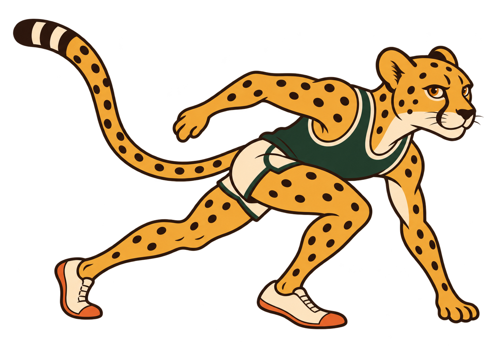

Meet the cheetah.
A low sprint start, visible eyes and a raised tail. Green singlet, cream shorts.




Generated still artwork for the local design study. The sponsor characters are existing outfit adaptations; no sponsor approval or Rive animation is implied.